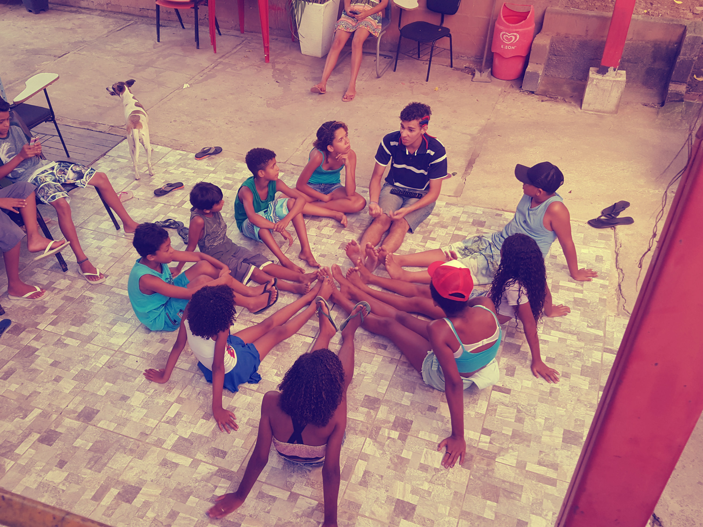
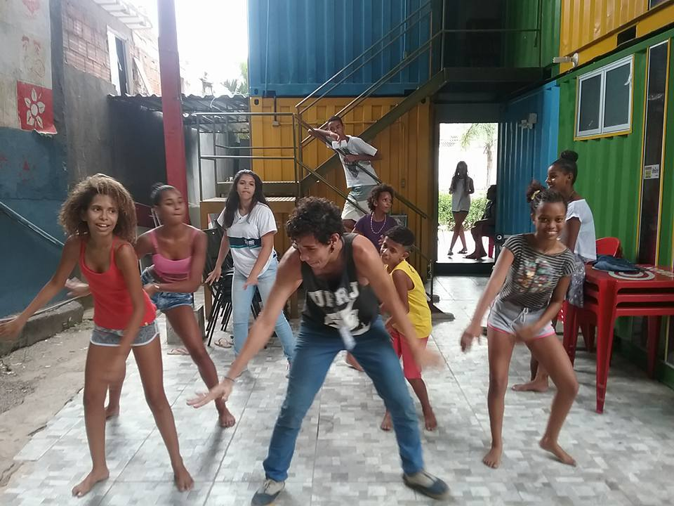
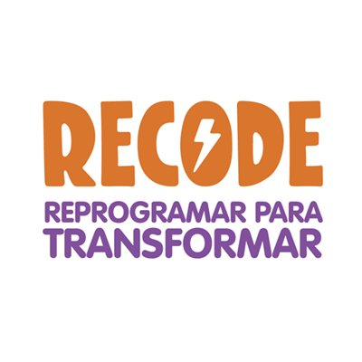
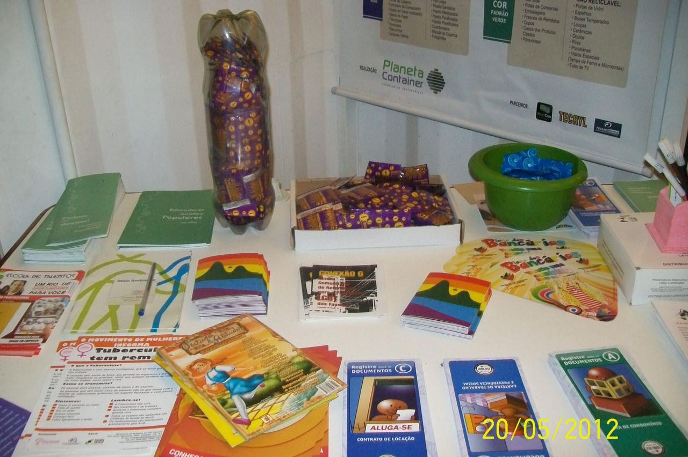

Sob a folha de zinco e entre os tapumes de compensado em madeira, lá em 2011, as crianças do Complexo do Alemão já eram felizes em ter um espaço para brincar e aprender na antiga sede do EDUCAP. Isso porque o projeto vem de muito antes, pela vontade dos próprios moradores de construir um espaço para gerar interação e promover iniciativas pelo bem-estar da comunidade.
Em 2012, aconteciam os Jogos Olímpicos em Londres, na Inglaterra. E, como de costume o país anfitrião oferece, através de um investimento social, um presente à próxima cidade sede dos jogos, o Rio de Janeiro. Diante das crianças ocupando de brincadeiras um espaço tão privado de recursos, os ingleses não tiveram dúvidas, aqui construiremos uma sede para atender com maior qualidade não só as crianças, mas toda a comunidade. E, em aproximadamente 20 dias foi levantada uma sede sustentável, que atualmente representa um verdadeiro oásis dentro do Complexo do Alemão.
Hoje colorido, ajardinado e climatizado, o EDUCAP tem ainda mais estrutura para acolher e apoiar os moradores da comunidade. O grande trunfo do EDUCAP está nos voluntários que não cansam de se reinventar para contribuir com uma comunidade mais saudável e próspera.
Lúcia Cabral /Presidente do EDUCAP

“Sonho que se sonha só
É só um sonho que se sonha só
Mas sonho que se sonha junto é realidade”
Raul Seixas
Quando tinha apenas 12 anos, Lúcia já se preocupava com a alfabetização dos moradores da comunidade, escrevendo e lendo cartas em nome daqueles que não tinham acesso à educação. Ela se tornou professora e militante dos direitos humanos pelas necessidades que observou e vivenciou no Complexo do Alemão.
Assim como muitos de seus vizinhos, Lúcia havia se mudado para o Rio de Janeiro em busca de qualidade de vida. Filha de um trabalhador que sofreu na própria pele os abusos da violência policial e veio a falecer por falta de informação e assistência sanitária, Lúcia Cabral cresceu na Rua Joaquim Queirós, acreditando na promoção da saúde e da cidadania como transformação social.
Para Lúcia, os desafios do território no Complexo do Alemão são um lembrete da importância de resistir e persistir em busca de um futuro melhor. Um espaço para convivência e divulgação de informações importantes muda tudo. O EDUCAP é um sonho que se sonha junto.
leia mais

aulas de dança

Além de melhorar a postura, aumentar a flexibilidade, o alongamento e a força muscular, desenvolver a coordenação motora e estimular a percepção de ritmo e musicalidade, a atividade colabora para a autoconfiança, a memorização e, consequentemente, para a melhora da auto-estima. Para crianças e adolescentes.
biblioteca comunitária

espaço destinado à realização de rodas de leitura para crianças e jovens e ao empréstimo de livros com o objetivo de estimular o hábito de ler como forma de aprendizado e lazer.
vai na web

Uma jornada de aprendizado em desenvolvimento web e habilidades sócio-emocionais para jovens de 16 a 29 anos que estão em início de carreira e querem aprender fazendo.
https://www.facebook.com/vainaweb
recode

O Programa Recode oferece oportunidades de desenvolvimento social e capacitação profissional através da promoção de cursos em tecnologia para
http://recode.org.br/

núcleo para promoção da sáude sexual e reprodutiva
responsabiliza-se pela distribuição de preservativos e materiais informativos sobre DST/HIV-Aids e Hepatites virais para conscientizar e prevenir os moradores através da educação sexual.
Elas da Favela: Documentário dirigido por Dafne Capella, que retrata a ocupação policial no cotidiano da favela do ponto de vista da mulher, através do relato de seis moradoras de uma das maiores comunidades do Rio de Janeiro, o Complexo do Alemão.
Nova sede do EDUCAP é inaugurada no complexo do Alemão - CEDAPS
Conheça o EDUCAP - Voz das Comunidades
Conheça algumas ONGs que fazem a diferença no Complexo do Alemão - O Globo